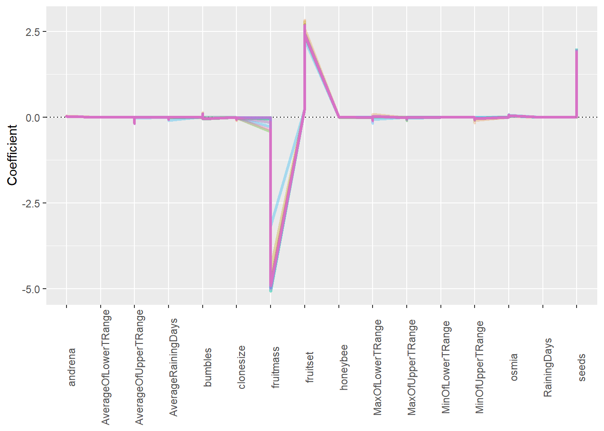
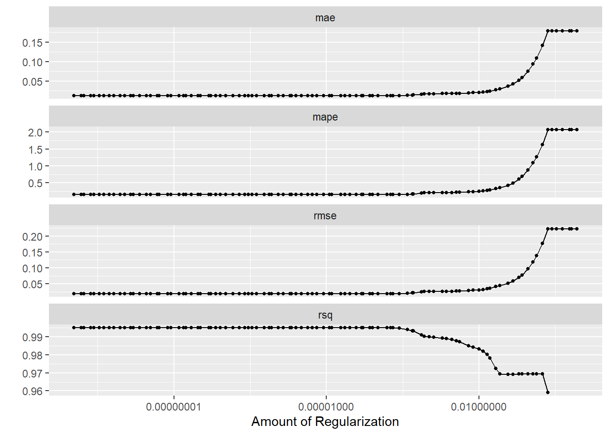
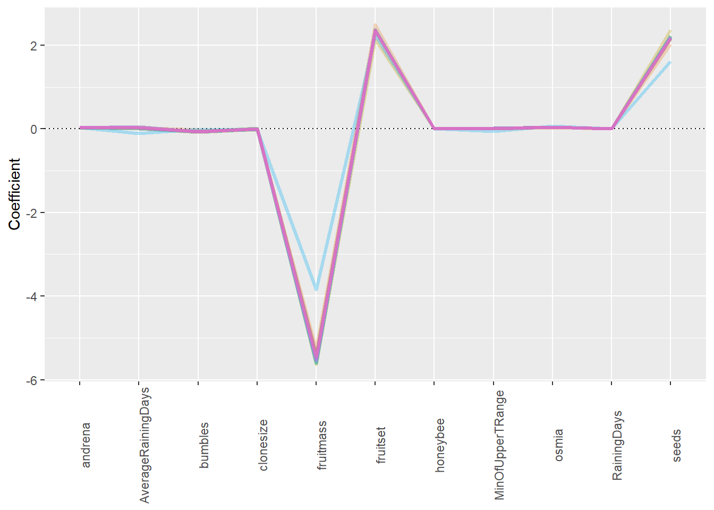
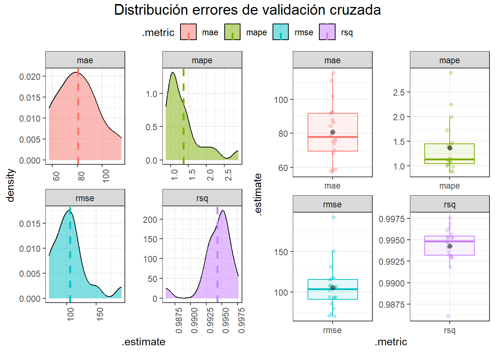
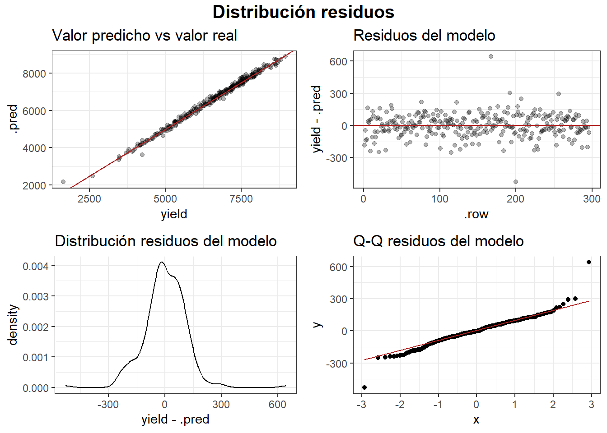
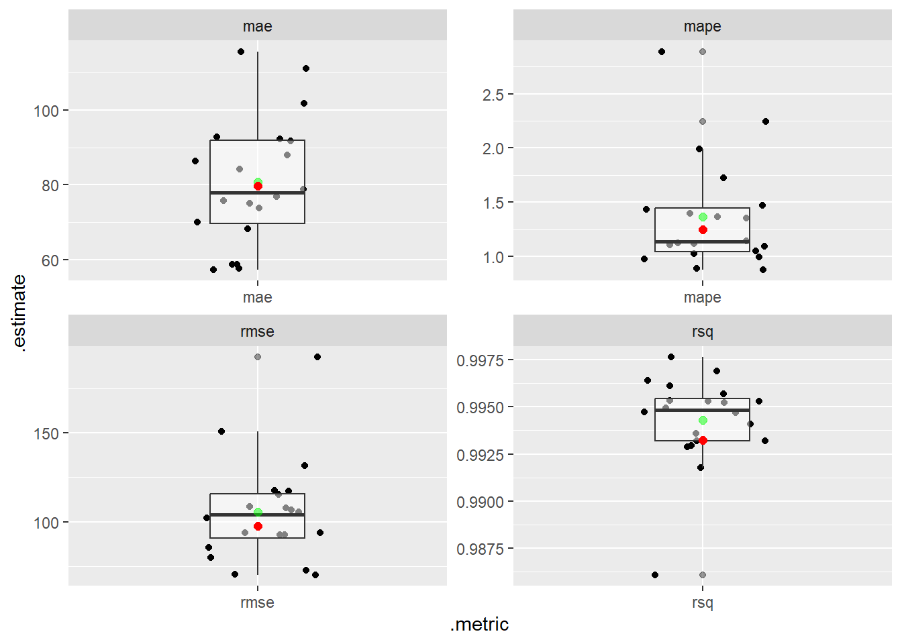
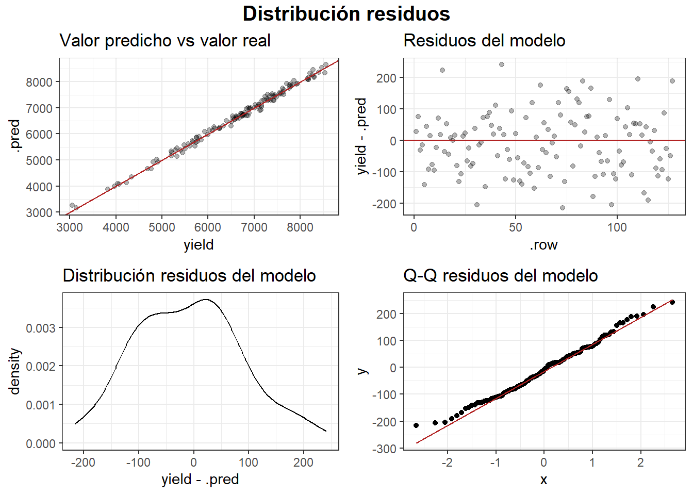
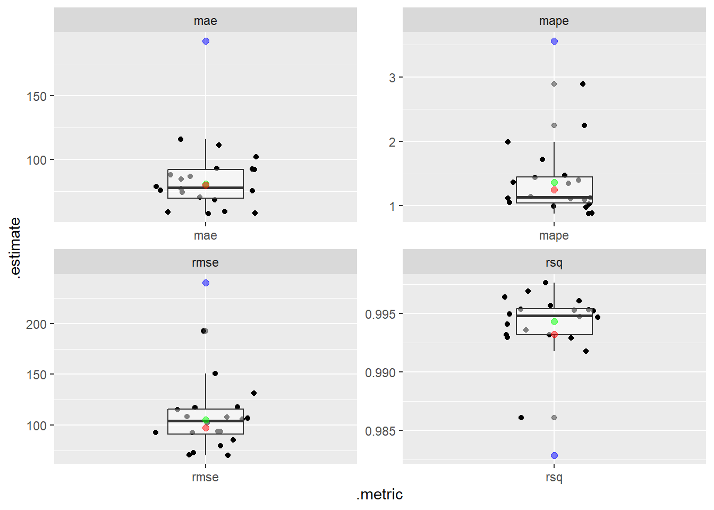
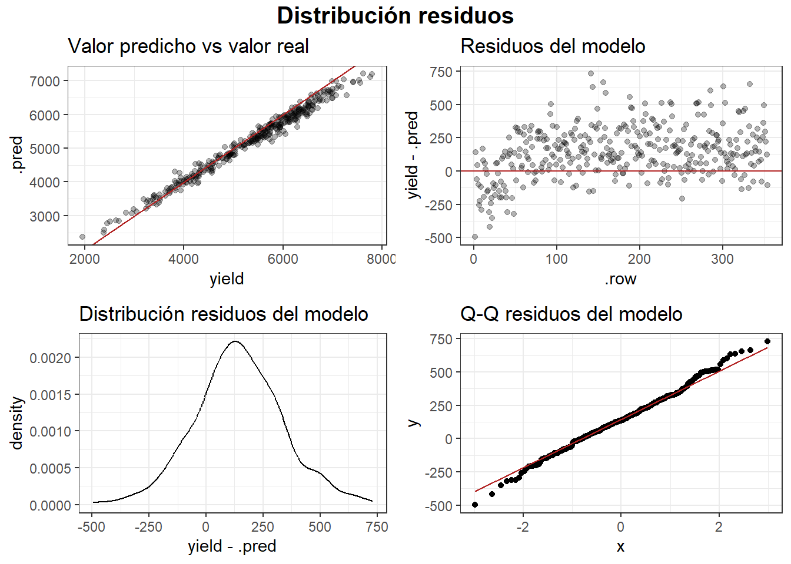

2 Modelamiento en tidymodels con el motor lm.
Caso: Plant spatial traits, bee species composition, and weather conditions dataset for wild blueberry yield prediction through computer simulation modeling and machine learning algorithms (Obsie & Drummond, 2020)
2.1 Resumen
El artículo “Wild blueberry yield prediction using a combination of computer simulation and machine learning algorithms”, usa datos recolectados por 30 años en Maine (EEUU) y publicados por Wild Blueberry Pollination Model, para un modelo de simulación espacial. El modelamiento predictivo en arándanos requiere de datos con fuerte influyencia de factores espaciales (geográficos), y adicionalmente en este caso, de las plantas, especies de abejas y meteorología. Estos datos simulados son usados por investigadores para probar la calidad predictiva de sus algoritmos de aprendizaje estadístico a datos reales y datos generados por simulación. Emplearemos este conjunto de datos para entrenar modelos en el enfoque tidy.
2.2 Descripción de los datos
En este artículo se cuenta con un conjunto de 777 registros. En la Tabla 1 se muestra una descripción de las variables empleadas.
Tabla 1.
Descripción de las variables.
| Variables | Unidad | Descripción | ||||
| Clonesize | \(m^2\) | El tamaño medio de los clones de arándanos en el campo | ||||
| Honeybee | bees/\(m^2\)/min | Densidad de abejas melíferas en el campo | ||||
| Bumbles | bees/\(m^2\)/min | Densidad de abejorros en el campo | ||||
| Andrena | bees/\(m^2\)/min | Densidad de abejas Andrena en el campo | ||||
| Osmia | bees/\(m^2\)/min | Densidad de abejas Osmia en el campo | ||||
| MaxOfUpperTRange | ℃ | El registro más alto de la temperatura diaria del aire en la banda superior durante la temporada de floración | ||||
| MinOfUpperTRange | ℃ | El registro más bajo de la banda superior de la temperatura diaria del aire temperatura | ||||
| AverageOfUpperTRange | ℃ | La media de la temperatura diaria del aire en la banda superior | ||||
| MaxOfLowerTRange | ℃ | El registro más alto de la temperatura diaria del aire en la banda inferior | ||||
| MinOfLowerTRange | ℃ | El registro más bajo de la banda inferior de la temperatura diaria del aire temperatura | ||||
| AverageOfLowerTRange | ℃ | La media de la banda inferior de la temperatura diaria del aire diaria | ||||
| RainingDays | Día | El número total de días durante la estación de floración, cada uno de los cuales tiene una precipitación superior a cero | ||||
| AverageRainingDays | Día | La media de días de lluvia de toda la floración temporada | ||||
| Fruitset | 100 unidades | Número de frutos por planta en centenas | ||||
| Fruitmass | kg | Peso de frutos | ||||
| Seeds | Unidad | Número de semillas por baya | ||||
| Yield | kg | Rendimiento | ||||
En este problema de estudio se afirma que existe independencia entre observaciones, a pesar que recolecta datos de clima durante el periodo 2015 a 2019. Pero, analizando más a fondo, pareciera que existe dependencia de individuos o puntos de muestreo (posiblemente, habrían entre clonesize datos de individuos con medidas repetidas en el tiempo) y cada cada uno de estos puntos de muestreo está en un punto único en el espacio. Por lo tanto, en este caso, existiría dependencia espacio - temporal, con datos de individuos con medidas repetidas. Omitiremos los supuestos de este caso para emplear modelos básicos y ver como nos va.
De las 777 observaciones, tomaremos 354 (45.56 %) , que corresponden a todas aquellas observaciones con clonesize mayor o igual a 20, para realizar un testeo externo de los modelos. Con las 407 observaciones restantes realizaremos un entrenamiento, validación cruzada y testeo interno de los modelos.
data %>% summarytools::descr()Descriptive Statistics
andrena AverageOfLowerTRange AverageOfUpperTRange AverageRainingDays
----------------- --------- ---------------------- ---------------------- --------------------
Mean 0.45 48.55 68.64 0.32
Std.Dev 0.16 5.40 7.65 0.17
Min 0.00 41.20 58.20 0.06
Q1 0.38 45.80 64.70 0.10
Median 0.38 50.80 71.90 0.26
Q3 0.50 50.80 71.90 0.39
Max 0.75 55.90 79.00 0.56
MAD 0.18 7.41 10.53 0.24
IQR 0.12 5.00 7.20 0.29
CV 0.36 0.11 0.11 0.54
Skewness 0.23 0.00 -0.01 0.07
SE.Skewness 0.12 0.12 0.12 0.12
Kurtosis -0.50 -1.33 -1.34 -1.29
N.Valid 423.00 423.00 423.00 423.00
Pct.Valid 100.00 100.00 100.00 100.00
Table: Table continues below
bumbles clonesize fruitmass fruitset honeybee MaxOfLowerTRange
----------------- --------- ----------- ----------- ---------- ---------- ------------------
Mean 0.28 12.78 0.46 0.54 0.36 59.26
Std.Dev 0.07 1.44 0.04 0.07 1.32 6.63
Min 0.00 10.00 0.31 0.19 0.00 50.20
Q1 0.25 12.50 0.43 0.50 0.25 55.80
Median 0.25 12.50 0.46 0.55 0.25 62.00
Q3 0.25 12.50 0.49 0.59 0.25 62.00
Max 0.58 20.00 0.54 0.65 18.43 68.20
MAD 0.00 0.00 0.05 0.07 0.00 9.19
IQR 0.00 0.00 0.06 0.10 0.00 6.20
CV 0.25 0.11 0.09 0.13 3.62 0.11
Skewness -0.10 4.76 -0.44 -0.99 12.56 -0.02
SE.Skewness 0.12 0.12 0.12 0.12 0.12 0.12
Kurtosis 2.76 21.05 -0.15 1.29 164.04 -1.35
N.Valid 423.00 423.00 423.00 423.00 423.00 423.00
Pct.Valid 100.00 100.00 100.00 100.00 100.00 100.00
Table: Table continues below
MaxOfUpperTRange MinOfLowerTRange MinOfUpperTRange osmia RainingDays
----------------- ------------------ ------------------ ------------------ -------- -------------
Mean 82.20 28.66 49.62 0.56 18.20
Std.Dev 9.16 3.20 5.60 0.18 12.17
Min 69.70 24.30 39.00 0.00 1.00
Q1 77.40 27.00 46.80 0.50 3.77
Median 86.00 30.00 52.00 0.63 16.00
Q3 86.00 30.00 52.00 0.75 24.00
Max 94.60 33.00 57.20 0.75 34.00
MAD 12.75 4.45 7.71 0.18 18.13
IQR 8.60 3.00 5.20 0.25 20.23
CV 0.11 0.11 0.11 0.32 0.67
Skewness -0.02 -0.01 -0.02 -1.01 -0.19
SE.Skewness 0.12 0.12 0.12 0.12 0.12
Kurtosis -1.34 -1.34 -1.33 0.75 -1.28
N.Valid 423.00 423.00 423.00 423.00 423.00
Pct.Valid 100.00 100.00 100.00 100.00 100.00
Table: Table continues below
seeds yield
----------------- -------- ---------
Mean 37.84 6559.03
Std.Dev 4.37 1273.98
Min 22.08 1637.70
Q1 35.09 5686.12
Median 38.38 6779.98
Q3 41.25 7529.18
Max 46.59 8969.40
MAD 4.55 1255.22
IQR 6.13 1826.46
CV 0.12 0.19
Skewness -0.45 -0.64
SE.Skewness 0.12 0.12
Kurtosis -0.09 0.02
N.Valid 423.00 423.00
Pct.Valid 100.00 100.002.3 Partición inicial de datos
A las últimas 423 observaciones no filtradas (clonesize < 25), se les aplicó una partición inicial 70 / 20, para obtener 296 observaciones para validación cruzada y entrenamiento de un modelo final, y 127 observaciones para testeo interno (en adición, recordemos que en un filtrado inicial se separó 354 observaciones para un testeo externo).
### Data partition ----
set.seed(123)
data_split <- initial_split(data, prop = 0.7)
data_train <- training(data_split)
data_test <- testing(data_split)2.4 Receta de preprocesamiento
Con ayuda del paquete {recipes}, se pueden crear recetas de preprocesamiento mediante pasos que ayudan en los procesos de ingeniería de variables. En este ejercicio, decido transformar con la función logaritmo natural a todas las variables numéricas, excepto a todas aquellas cuyo valor mínimo sea menor a 1.
Este paquete permite aplicar la receta creada a cualquier conjunto de datos. Primero se tiene que hacer una preparación de la receta con la función prep(), y la transformación de los datos se emplea con juice() y bake(), para los datos con los que se realiza la base del proceso y nuevos datos respectivamente.
Esta receta creada será llamada durante todo el proceso de modelamiento. Por otro lado, cuando una receta tiene demasiados pasos, es recomendable transformar los conjuntos de datos con la función bake() y luego crear una receta genérica con la cual hacer el modelamiento.
### Recipes ----
data_rec <- recipe(formula = `yield` ~ .,
x = data_train) %>%
step_select(where(base::is.numeric)) %>%
# step_nzv(all_predictors(),
# -all_outcomes()) %>%
# step_zv(all_predictors(),
# -all_outcomes()) %>%
# step_mutate(honeybee = honeybee * 100,
# bumbles = bumbles * 100,
# andrena = andrena * 100,
# osmia = osmia * 100,
# andrenaosmia = andrena + osmia,
# fruitset = fruitset * 10000,
# fruitmass = fruitmass * 10000) %>%
step_mutate_at(where(base::is.numeric),
-contains(c("RainingDays",
"AverageRainingDays",
"honeybee",
"bumbles",
"andrena",
"osmia",
"fruitset",
"fruitmass")),
fn = ~log(.)) #%>%
# step_corr(all_predictors(),
# -all_outcomes(),
# threshold = 0.9)
data_prep <- prep(data_rec)
data_train_prep <- juice(data_prep)
# data_train_prep <- bake(data_prep, new_data = data_train)
data_test_prep <- bake(data_prep, new_data = data_test)
data_new_prep <- bake(data_prep, new_data = data_new)2.5 Selección de variables
Uno de los pasos más importantes en el modelamiento, es elegir las variables adecuadas. En esta sección emplearemos un proceso de bajo costo computacional.
Algo que se debe tener en cuenta, es que en las proyecciones agrícolas se deben emplear procesos rápidos. No les muestro un proceso que puede tomar mucho tiempo computacional, debido a que no les ayudará de mucho tomarse más tiempo por un resultado de selección que puede llegar a ser muy similar a este.
2.5.1 Selección por Regresión Lasso
2.5.1.1 Proceso paralelo
### Proceso paralelo ----
# Acelerar el cálculo con procesamiento paralelo
doParallel::registerDoParallel()
ncores <- parallel::detectCores(logical = TRUE)
registerDoParallel(cores = ncores)2.5.1.2 Definir validación cruzada
Para realizar la validación cruzada, se tomará en cuenta un proceso que es básico y muy conocido, llamado K-fold CV. En este caso, se creará 20 folios. Debemos tener en cuenta que este modelo de validación se emplea cuando existe total independencia entre observaciones.
set.seed(234)
data_folds <- rsample::vfold_cv(data_train,
v = 20)2.5.1.3 Definir especificaciones del modelo
Para crear modelos en tidymodels, es necesario especificar el modelo a emplear, los parámetros del modelo, qué parámetros se calibrarán (tune), el modo o problema del modelo (regresión) y el modelo de motor.
lasso_spec <- linear_reg(penalty = tune(),
mixture = 1) %>%
set_mode("regression") %>%
set_engine("glmnet",
standarize = TRUE)2.5.1.4 Definir fórmula del modelo
En este paso, definimos que la formula del rendimiento incluirá a todas las variables del dataset.
formula_lasso = yield ~ .2.5.1.5 Definir flujo de trabajo
El flujo de trabajo contiene la información requerida para ajustar y predecir desde un modelo.
lasso_wf <- workflow() %>%
add_recipe(data_rec) %>%
add_model(lasso_spec,
formula = formula_lasso) 2.5.1.6 Extraer el conjunto de parámetros del modelo
En este paso, se extraen los parámetros a calibrar, que fueron definidos en las especificaciones del modelo.
lasso_params <- hardhat::extract_parameter_set_dials(lasso_wf)
lasso_paramsCollection of 1 parameters for tuning
identifier type object
penalty penalty nparam[+]2.5.1.7 Definir métricas del performance predictivo
En este paso elegimos qué metricas vamos a rescatar en las distintas fases de evaluación del modelo.
multi_met <- yardstick::metric_set(yardstick::rmse, yardstick::rsq,
yardstick::mape, yardstick::mae)2.5.1.8 Definir función para recuperar coeficientes
Definimos una función que nos permita rescatar los coeficientes del modelo.
get_glm_coefs <- function(x) {
x %>%
# get the glm model object
extract_fit_engine() %>%
# transform its format
broom::tidy()
}2.5.1.9 Búsqueda del mejor índice de penalización
En este paso, ejecutamos la validación cruzada y realizamos la búsqueda del mejor lambda.
set.seed(2020)
tictoc::tic()
lasso_tune <-
lasso_wf %>%
tune_grid(
resamples = data_folds,
param_info = lasso_params,
grid = 100, #lambda_grid
# por defecto es 5 (número aleatorio de combinaciones (puntos de grilla) de hiperparámetros)
metrics = multi_met,
control = control_grid(
extract = get_glm_coefs,
save_pred = TRUE,
verbose = FALSE)
)
tictoc::toc()17.22 sec elapsed2.5.1.10 Coeficientes del modelo en cada folio
En este paso, podemos observar la evolución de los coeficientes de las variables para cada folio. Adicional, tenemos un autoplot() que grafica la evolución de las métricas a medida que cambia el lambda.
lasso_coefs <-
lasso_tune %>%
select(id, .extracts) %>%
unnest(.extracts) %>%
# La columna `penalty` en este nivel es redundante, así que
# la eliminaremos.
select(id, .extracts) %>%
# Como se obtienen todos los coeficientes para cada ajuste glmnet, los valores
# se replican dentro de un valor de mezcla. Mantendremos la primera fila para
# no obtener los mismos valores una y otra vez.
group_by(id) %>%
dplyr::slice(1) %>%
ungroup() %>%
unnest(.extracts) %>%
# cambiar el nombre para que sea coherente con tidymodels
rename("penalty" = "lambda")
lasso_coefs %>% select(id, term, penalty, estimate)# A tibble: 15,608 × 4
id term penalty estimate
<chr> <chr> <dbl> <dbl>
1 Fold01 (Intercept) 0.224 8.76
2 Fold01 (Intercept) 0.204 8.62
3 Fold01 (Intercept) 0.186 8.49
4 Fold01 (Intercept) 0.169 8.37
5 Fold01 (Intercept) 0.154 8.26
6 Fold01 (Intercept) 0.141 8.16
7 Fold01 (Intercept) 0.128 8.07
8 Fold01 (Intercept) 0.117 7.98
9 Fold01 (Intercept) 0.106 7.91
10 Fold01 (Intercept) 0.0970 7.84
# … with 15,598 more rowslasso_coefs %>%
filter(term != "(Intercept)") %>%
ggplot(aes(x = term, y = estimate, group = id, col = id)) +
geom_hline(yintercept = 0, lty = 3) +
geom_line(alpha = 0.3, linewidth = 1.2) +
labs(y = "Coefficient", x = NULL) +
theme(legend.position = "none") +
theme(axis.text.x=element_text(angle=90, hjust=0.5))
autoplot(lasso_tune)
2.5.1.11 Seleccionar el mejor valor de penalización
Aquí, buscamos el lambda con menor rmse y con este valor entrenaremos el modelo final.
best_metrics <- lasso_tune %>%
select_best("rmse")
best_metrics# A tibble: 1 × 2
penalty .config
<dbl> <chr>
1 0.000102 Preprocessor1_Model061final_lasso <- finalize_workflow(lasso_wf,
best_metrics)
final_lasso══ Workflow ════════════════════════════════════════════════════════════════════
Preprocessor: Recipe
Model: linear_reg()
── Preprocessor ────────────────────────────────────────────────────────────────
2 Recipe Steps
• step_select()
• step_mutate_at()
── Model ───────────────────────────────────────────────────────────────────────
Linear Regression Model Specification (regression)
Main Arguments:
penalty = 0.000102173480970979
mixture = 1
Engine-Specific Arguments:
standarize = TRUE
Computational engine: glmnet 2.5.1.12 Entrenar el modelo final
final <- final_lasso %>%
fit(data_train) %>%
extract_fit_parsnip()
# final2.5.1.13 Predictores finales
Como último paso, extraemos los predictores finales, usando la importancia de estas variables en el modelo final, omitiendo todos aquellos predictores con importancia 0.
predictors <- final %>%
vip::vi(lambda = best_metrics$penalty,
alpha = best_metrics$mixture,
num_features = 60) %>%
dplyr::mutate(
Importance = abs(Importance),
Variable = fct_reorder(Variable, Importance)
) %>%
dplyr::filter(!Importance == 0) %>%
dplyr::arrange(-Importance) %>%
select(Variable) %>% t() %>% as.vector()
predictors [1] "fruitmass" "fruitset" "seeds"
[4] "osmia" "andrena" "bumbles"
[7] "MinOfUpperTRange" "clonesize" "AverageRainingDays"
[10] "honeybee" "RainingDays" 2.6 Modelo lineal general
En esta sección, veremos como se entrenan, validen y testean modelos paramétricos, tomando como ejemplo el modelo lineal general. Omitiré la explicación de los pasos que vimos en la sección anterior.
2.6.1 Definir especificaciones del modelo
# Inicializar un objeto de regresión lineal
linear_model_spec <- linear_reg() %>%
# Establecer el modelo de motor
set_engine('lm') %>%
# Establecer el modo de modelo
set_mode('regression')2.6.2 Definir fórmula del modelo
A diferencia de la sección anterior, ahora definimos la fórmula con los predictores elegidos por la regresión Lasso.
formula_lm = yield ~ fruitmass + fruitset + seeds + osmia + andrena + bumbles +
MinOfUpperTRange + clonesize + AverageRainingDays + honeybee + RainingDays 2.6.3 Definir flujo de trabajo
lm_wf <- workflow() %>%
add_recipe(data_rec) %>%
add_model(linear_model_spec,
formula = formula_lm) 2.6.4 Validación cruzada
tictoc::tic()
validacion_lm <-
lm_wf %>%
fit_resamples(
resamples = data_folds,
metrics = multi_met,
control = control_resamples( #control_grid
extract = get_glm_coefs, #identity
save_pred = TRUE,
verbose = FALSE#,
#parallel_over = "resamples"
)
)
tictoc::toc()3.34 sec elapsedLuego de la validación cruzada, como la función considera que yield está transformado a su logaritmo natural, al aplicarle un exponente tanto a los valores reales como los valores predichos, estaremos obteniendo los valores en la escala original. Haremos lo mismo en muchos pasos siguientes.
validacion_lm <- validacion_lm %>%
unnest(.predictions) %>%
dplyr::mutate(yield = exp(yield),
.pred = exp(.pred)) %>%
group_by(id) %>%
nest(`.predictions` = 6:9)2.6.5 Coeficientes en cada folio
lm_coefs <-
validacion_lm %>%
select(id, .extracts) %>%
unnest(.extracts) %>%
select(id, .extracts) %>%
group_by(id) %>%
dplyr::slice(1) %>%
ungroup() %>%
unnest(.extracts)
lm_coefs %>% select(id, term, estimate)# A tibble: 240 × 3
id term estimate
<chr> <chr> <dbl>
1 Fold01 (Intercept) 2.04
2 Fold01 fruitmass -5.48
3 Fold01 fruitset 2.31
4 Fold01 seeds 2.21
5 Fold01 osmia 0.0408
6 Fold01 andrena 0.0286
7 Fold01 bumbles -0.0713
8 Fold01 MinOfUpperTRange 0.00523
9 Fold01 clonesize -0.00461
10 Fold01 AverageRainingDays 0.00593
# … with 230 more rowslm_coefs %>%
filter(term != "(Intercept)") %>%
ggplot(aes(x = term, y = estimate, group = id, col = id)) +
geom_hline(yintercept = 0, lty = 3) +
geom_line(alpha = 0.3, linewidth = 1.2) +
labs(y = "Coefficient", x = NULL) +
theme(legend.position = "none") +
theme(axis.text.x=element_text(angle=90, hjust=0.5))
2.6.6 Métricas del rendimiento predictivo en fase de validación cruzada
En este paso recupero las métricas del rendimiento predictivo en la fase de validación cruzada, primero como promedio para cada folio y luego el valor puntual obtenido de cada folio.
# Métricas promedio de todas las particiones
metrics_lm <-
validacion_lm %>%
unnest(.predictions) %>%
group_by(id) %>%
multi_met(truth = `yield`,
estimate = `.pred`) %>%
group_by(.metric) %>%
dplyr::summarise(mean = mean(`.estimate`, na.rm = T),
std_err = sd(`.estimate`, na.rm = T),
n = n()) %>%
ungroup() %>%
dplyr::mutate(modelo = "lm")
metrics_lm# A tibble: 4 × 5
.metric mean std_err n modelo
<chr> <dbl> <dbl> <int> <chr>
1 mae 80.7 17.1 20 lm
2 mape 1.36 0.509 20 lm
3 rmse 105. 29.0 20 lm
4 rsq 0.994 0.00244 20 lm # Métricas individuales de cada una de las particiones
metrics_lm_complete <-
validacion_lm %>%
unnest(.predictions) %>%
group_by(id) %>%
multi_met(truth = `yield`,
estimate = `.pred`) %>%
ungroup() %>%
dplyr::mutate(modelo = "lm")
metrics_lm_complete# A tibble: 80 × 5
id .metric .estimator .estimate modelo
<chr> <chr> <chr> <dbl> <chr>
1 Fold01 rmse standard 115. lm
2 Fold02 rmse standard 193. lm
3 Fold03 rmse standard 85.5 lm
4 Fold04 rmse standard 117. lm
5 Fold05 rmse standard 102. lm
6 Fold06 rmse standard 70.4 lm
7 Fold07 rmse standard 92.7 lm
8 Fold08 rmse standard 92.6 lm
9 Fold09 rmse standard 106. lm
10 Fold10 rmse standard 131. lm
# … with 70 more rowsLuego, ploteamos los resultados del rendimiento predictivo en fase de validación cruzada.
# Valores de validación (mae y rmse) obtenidos en cada partición y repetición.
p1 <- ggplot(
data = metrics_lm_complete,
aes(x = .estimate, fill = .metric)) +
geom_density(alpha = 0.5) +
theme_bw() +
facet_wrap(. ~ .metric, scales = "free") +
geom_vline(
data = metrics_lm %>% rename(".estimate" = "mean"),
aes(xintercept = .estimate, colour = .metric), linewidth = 1, alpha = 1,
linetype = 2
) +
theme(axis.text.x=element_text(angle=90, hjust=0.5))
p2 <- ggplot(
data = metrics_lm_complete,
aes(x = .metric, y = .estimate, fill = .metric, color = .metric)) +
geom_boxplot(outlier.shape = NA, alpha = 0.1) +
geom_jitter(width = 0.05, alpha = 0.3) +
# coord_flip() +
geom_point(
data = metrics_lm %>% rename(".estimate" = "mean"),
color = "black", size = 2, alpha = 0.5
) +
theme_bw() +
facet_wrap(.metric ~ ., scales = "free")
ggpubr::ggarrange(p1, p2, ncol = 2, common.legend = TRUE, align = "v") %>%
ggpubr::annotate_figure(
top = ggpubr::text_grob("Distribución errores de validación cruzada", size = 15)
)
validation_lm_predictions <-
validacion_lm %>%
unnest(.predictions) %>%
group_by(.row) %>%
dplyr::summarise(dplyr::across(c(yield,.pred),
mean)) %>%
dplyr::mutate(modelo = "lm")
p1 <- ggplot(
data = validation_lm_predictions,
aes(x = yield, y = .pred)) +
geom_point(alpha = 0.3) +
geom_abline(slope = 1, intercept = 0, color = "firebrick") +
labs(title = "Valor predicho vs valor real") +
theme_bw()
p2 <- ggplot(
data = validation_lm_predictions,
aes(x = .row, y = yield - .pred)
) +
geom_point(alpha = 0.3) +
geom_hline(yintercept = 0, color = "firebrick") +
labs(title = "Residuos del modelo") +
theme_bw()
p3 <- ggplot(
data = validation_lm_predictions,
aes(x = yield - .pred)
) +
geom_density() +
labs(title = "Distribución residuos del modelo") +
theme_bw()
p4 <- ggplot(
data = validation_lm_predictions,
aes(sample = yield - .pred)
) +
geom_qq() +
geom_qq_line(color = "firebrick") +
labs(title = "Q-Q residuos del modelo") +
theme_bw()
ggpubr::ggarrange(plotlist = list(p1, p2, p3, p4)) %>%
ggpubr::annotate_figure(
top = ggpubr::text_grob("Distribución residuos", size = 15, face = "bold")
)
2.6.7 Entrenamiento del modelo final
El entrenamiento de un modelo final se hace con todos los datos de entrenamiento (data_train).
lm_model <- linear_model_spec %>%
fit(formula_lm,
data = data_train_prep)
lm_modelparsnip model object
Call:
stats::lm(formula = yield ~ fruitmass + fruitset + seeds + osmia +
andrena + bumbles + MinOfUpperTRange + clonesize + AverageRainingDays +
honeybee + RainingDays, data = data)
Coefficients:
(Intercept) fruitmass fruitset seeds
2.145447 -5.431983 2.352563 2.157387
osmia andrena bumbles MinOfUpperTRange
0.040705 0.028038 -0.066671 0.007771
clonesize AverageRainingDays honeybee RainingDays
-0.002402 0.023102 0.005162 -0.000696 lm_model %>% broom::tidy()# A tibble: 12 × 5
term estimate std.error statistic p.value
<chr> <dbl> <dbl> <dbl> <dbl>
1 (Intercept) 2.15 0.397 5.40 1.42e- 7
2 fruitmass -5.43 0.341 -15.9 2.51e-41
3 fruitset 2.35 0.104 22.7 1.04e-65
4 seeds 2.16 0.140 15.4 2.30e-39
5 osmia 0.0407 0.00902 4.51 9.32e- 6
6 andrena 0.0280 0.00787 3.56 4.33e- 4
7 bumbles -0.0667 0.0258 -2.59 1.02e- 2
8 MinOfUpperTRange 0.00777 0.0178 0.435 6.64e- 1
9 clonesize -0.00240 0.0191 -0.126 9.00e- 1
10 AverageRainingDays 0.0231 0.0604 0.383 7.02e- 1
11 honeybee 0.00516 0.00164 3.15 1.80e- 3
12 RainingDays -0.000696 0.000817 -0.852 3.95e- 12.6.7.1 Rescatando las especififaciones del modelo para futuras recalibraciones
spec <- lm_model %>% extract_spec_parsnip()2.6.8 Testeo interno
Ahora, testeamos el modelo final con los datos de prueba (data_test).
#### Testeo interno ----
# PREDICCIÓN TEST ----
# =============================================================================
predicciones <- lm_model %>%
predict(
new_data = data_test_prep,
type = "numeric"
)
# MÉTRICAS TEST ----
# =============================================================================
predicciones_lm <- predicciones %>%
bind_cols(data_test_prep %>% dplyr::select(yield)) %>%
dplyr::mutate(modelo = "lm",
yield = exp(yield),
.pred = exp(.pred))
summary(predicciones_lm) .pred yield modelo
Min. :3154 Min. :3049 Length:127
1st Qu.:5856 1st Qu.:5792 Class :character
Median :6761 Median :6796 Mode :character
Mean :6625 Mean :6616
3rd Qu.:7485 3rd Qu.:7434
Max. :8651 Max. :8562 # Error de test
error_test_lm <- multi_met(
data = predicciones_lm,
truth = yield,
estimate = .pred,
na_rm = TRUE
) %>%
dplyr::mutate(
modelo = "lm"
)
error_test_lm# A tibble: 4 × 4
.metric .estimator .estimate modelo
<chr> <chr> <dbl> <chr>
1 rmse standard 97.5 lm
2 rsq standard 0.993 lm
3 mape standard 1.25 lm
4 mae standard 79.8 lm combo_plot <- metrics_lm_complete %>%
ggplot(aes(x = .metric, y = .estimate)) +
geom_jitter(width = 0.2) +
geom_boxplot(width = 0.3, alpha = 0.5) +
geom_point(
data = metrics_lm %>% rename(".estimate" = "mean"),
color = "green", size = 2, alpha = 0.5
) +
geom_point(
data = error_test_lm,
color = "red", size = 2
) +
facet_wrap(.metric~., scales = "free")
combo_plot
pe1 <- ggplot(
data = predicciones_lm,
aes(x = yield, y = .pred)
) +
geom_point(alpha = 0.3) +
geom_abline(slope = 1, intercept = 0, color = "firebrick") +
labs(title = "Valor predicho vs valor real") +
theme_bw()
pe2 <- ggplot(
data = predicciones_lm,
aes(x = 1:nrow(predicciones_lm), y = yield - .pred)
) +
geom_point(alpha = 0.3) +
geom_hline(yintercept = 0, color = "firebrick") +
labs(title = "Residuos del modelo",
x = ".row") +
theme_bw()
pe3 <- ggplot(
data = predicciones_lm,
aes(x = yield - .pred)
) +
geom_density() +
labs(title = "Distribución residuos del modelo") +
theme_bw()
pe4 <- ggplot(
data = predicciones_lm,
aes(sample = yield - .pred)
) +
geom_qq() +
geom_qq_line(color = "firebrick") +
labs(title = "Q-Q residuos del modelo") +
theme_bw()
ggpubr::ggarrange(plotlist = list(pe1, pe2, pe3, pe4)) %>%
ggpubr::annotate_figure(
top = ggpubr::text_grob("Distribución residuos", size = 15, face = "bold")
)
Los puntos verdes y rojos en los gráficos de cajas y bigotes, representan a los promedios en la fase de validación cruzada y testeo interno, respectivamente.
2.6.9 Recalibración inicial del modelo
Como la prueba fue exitosa y no hay evidencia de sobreajuste, se procede con la recalibración del modelo con los datos de entrenamiento y prueba interna (data_train + data_test).
lm_model_rec <- lm_model %>%
extract_spec_parsnip() %>%
fit(
formula_lm,
data = bind_rows(data_train_prep,
data_test_prep))
lm_model_rec %>% broom::tidy()# A tibble: 12 × 5
term estimate std.error statistic p.value
<chr> <dbl> <dbl> <dbl> <dbl>
1 (Intercept) 2.29 0.325 7.05 7.55e-12
2 fruitmass -5.34 0.266 -20.1 5.02e-63
3 fruitset 2.37 0.0934 25.3 5.06e-86
4 seeds 2.11 0.115 18.4 1.55e-55
5 osmia 0.0378 0.00721 5.24 2.58e- 7
6 andrena 0.0349 0.00612 5.69 2.40e- 8
7 bumbles -0.0645 0.0203 -3.18 1.60e- 3
8 MinOfUpperTRange -0.000302 0.0142 -0.0213 9.83e- 1
9 clonesize -0.00463 0.0159 -0.291 7.71e- 1
10 AverageRainingDays -0.000481 0.0470 -0.0102 9.92e- 1
11 honeybee 0.00482 0.00149 3.24 1.29e- 3
12 RainingDays -0.000489 0.000633 -0.773 4.40e- 12.6.10 Testeo externo
Finalmente, el testeo externo con el conjunto de datos para testeo externo (data_new).
#### Testeo externo ----
# PREDICCIÓN TEST ----
# =============================================================================
predicciones_ext <- lm_model_rec %>%
predict(
new_data = data_new_prep,
type = "numeric"
)
# MÉTRICAS TEST ----
# =============================================================================
predicciones_lm_ext <- predicciones_ext %>%
bind_cols(data_new_prep %>% select(yield)) %>%
dplyr::mutate(modelo = "lm",
yield = exp(yield),
.pred = exp(.pred))
summary(predicciones_lm_ext) .pred yield modelo
Min. :2364 Min. :1946 Length:354
1st Qu.:4452 1st Qu.:4514 Class :character
Median :5370 Median :5555 Mode :character
Mean :5218 Mean :5360
3rd Qu.:5979 3rd Qu.:6237
Max. :7205 Max. :7805 # Error de test
error_test_lm_ext <- multi_met(
data = predicciones_lm_ext,
truth = yield,
estimate = .pred,
na_rm = TRUE
) %>%
dplyr::mutate(
modelo = "lm"
)
error_test_lm_ext# A tibble: 4 × 4
.metric .estimator .estimate modelo
<chr> <chr> <dbl> <chr>
1 rmse standard 240. lm
2 rsq standard 0.983 lm
3 mape standard 3.56 lm
4 mae standard 193. lm combo_plot <- metrics_lm_complete %>%
ggplot(aes(x = .metric, y = .estimate)) +
geom_jitter(width = 0.2) +
geom_boxplot(width = 0.3, alpha = 0.5) +
geom_point(
data = metrics_lm %>% rename(".estimate" = "mean"),
color = "green", size = 2, alpha = 0.5
) +
geom_point(
data = error_test_lm,
color = "red", size = 2, alpha = 0.5
) +
geom_point(
data = error_test_lm_ext,
color = "blue", size = 2, alpha = 0.5
) +
facet_wrap(.metric~., scales = "free")
combo_plot
pe1 <- ggplot(
data = predicciones_lm_ext,
aes(x = yield, y = .pred)
) +
geom_point(alpha = 0.3) +
geom_abline(slope = 1, intercept = 0, color = "firebrick") +
labs(title = "Valor predicho vs valor real") +
theme_bw()
pe2 <- ggplot(
data = predicciones_lm_ext,
aes(x = 1:nrow(predicciones_lm_ext), y = yield - .pred)
) +
geom_point(alpha = 0.3) +
geom_hline(yintercept = 0, color = "firebrick") +
labs(title = "Residuos del modelo",
x = ".row") +
theme_bw()
pe3 <- ggplot(
data = predicciones_lm_ext,
aes(x = yield - .pred)
) +
geom_density() +
labs(title = "Distribución residuos del modelo") +
theme_bw()
pe4 <- ggplot(
data = predicciones_lm_ext,
aes(sample = yield - .pred)
) +
geom_qq() +
geom_qq_line(color = "firebrick") +
labs(title = "Q-Q residuos del modelo") +
theme_bw()
ggpubr::ggarrange(plotlist = list(pe1, pe2, pe3, pe4)) %>%
ggpubr::annotate_figure(
top = ggpubr::text_grob("Distribución residuos", size = 15, face = "bold")
)
Los puntos azules en los gráficos de cajas y bigotes, representan a los promedios en la fase de testeo externo. Se evidencia un cierto grado de sobreajuste en esta fase.
Luego del testeo externo, si se desea usar el algoritmo para realizar predicciones con conjuntos de datos nuevos, se puede recalibrar nuevamente el modelo con todos los datos del entrenamiento, prueba interna y externa.
2.7 Discusión
Muchos problemas predictivos pueden solucionarse con modelos de bajo costo computacional. La clave para hacer modelamiento predictivo no está en el uso de modelos “sofisticados”. Antes de comenzar con algún modelamiento, se debe realizar un adecuado proceso de ingeniería de variables, que es lo que permite el éxito del modelamiento en un 80 %. Hay que considerar que cada modelo tiene un procedimiento de preprocesamiento de los datos recomendado.
Aparentemente, según los resultados del testeo externo, este ha sido un problema en el cual no existió dependencia entre observaciones, entonces, cada una de las observaciones representaba a un individuo distinto en un único momento de tiempo y cada individuo tiene una única medición en los datos; esto permite que el modelo creado se pueda validar mediante un proceso más básico de lo que habitualmente se necesita. Pero, este este no es el caso que regularmente se presenta en las empresas agrícolas o en Crop Yield Forecasting, por ello se debe tener mucho cuidado si se intenta replicar este esquema de validación en casos en los cuales tenemos datos donde existe dependencia por individuo, por tiempo y por espacio.